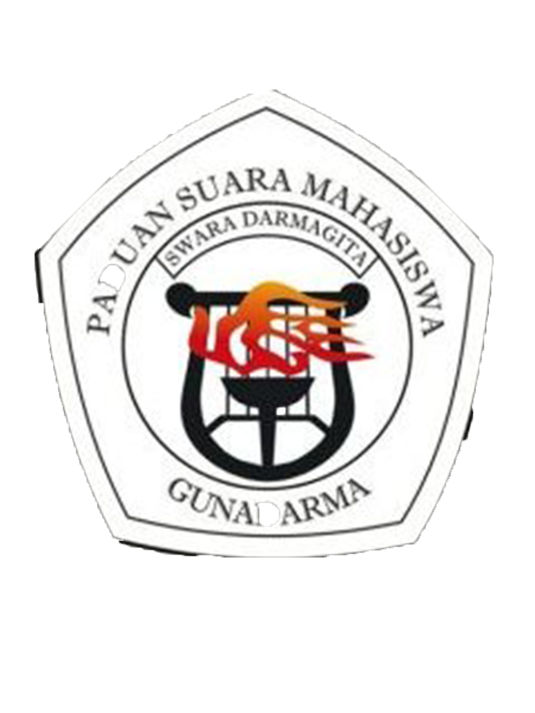
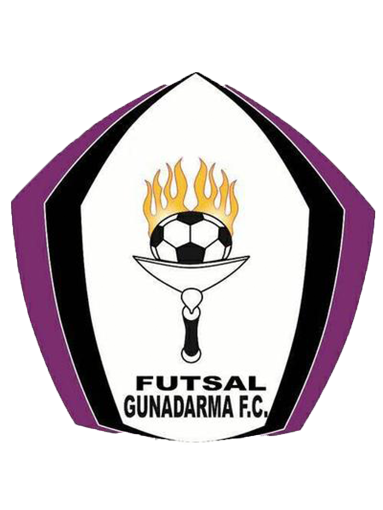

 Info SwaraDarmagitaPSM Swara Darmagita, adalah salah satu dari banyak Unit Kegiatan Mahasiswa yang di miliki oleh Universitas Gunadarma. UKM yang bergerak di dunia Tarik Suara ini telah berdiri sejak tahun 1987 dan pada tahun 1989 UKM Paduan Suara ini resmi memakai nama "Swara Darmagita". Sejak pertama berdiri hingga saat ini, PSM Swara Darmagita tetap eksis mengikuti lomba-lomba Paduan Suara tingkat regional hingga Internasional.
 Info FutsalPSM Swara Darmagita, adalah salah satu dari banyak Unit Kegiatan Mahasiswa yang di miliki oleh Universitas Gunadarma. UKM yang bergerak di dunia Tarik Suara ini telah berdiri sejak tahun 1987 dan pada tahun 1989 UKM Paduan Suara ini resmi memakai nama "Swara Darmagita". Sejak pertama berdiri hingga saat ini, PSM Swara Darmagita tetap eksis mengikuti lomba-lomba Paduan Suara tingkat regional hingga Internasional.
Info BEM FTIPSM Swara Darmagita, adalah salah satu dari banyak Unit Kegiatan Mahasiswa yang di miliki oleh Universitas Gunadarma. UKM yang bergerak di dunia Tarik Suara ini telah berdiri sejak tahun 1987 dan pada tahun 1989 UKM Paduan Suara ini resmi memakai nama "Swara Darmagita". Sejak pertama berdiri hingga saat ini, PSM Swara Darmagita tetap eksis mengikuti lomba-lomba Paduan Suara tingkat regional hingga Internasional.
Info BEM FEPSM Swara Darmagita, adalah salah satu dari banyak Unit Kegiatan Mahasiswa yang di miliki oleh Universitas Gunadarma. UKM yang bergerak di dunia Tarik Suara ini telah berdiri sejak tahun 1987 dan pada tahun 1989 UKM Paduan Suara ini resmi memakai nama "Swara Darmagita". Sejak pertama berdiri hingga saat ini, PSM Swara Darmagita tetap eksis mengikuti lomba-lomba Paduan Suara tingkat regional hingga Internasional.
Info Seputar Komit PSM Swara Darmagita, adalah salah satu dari banyak Unit Kegiatan Mahasiswa yang di miliki oleh Universitas Gunadarma. UKM yang bergerak di dunia Tarik Suara ini telah berdiri sejak tahun 1987 dan pada tahun 1989 UKM Paduan Suara ini resmi memakai nama "Swara Darmagita". Sejak pertama berdiri hingga saat ini, PSM Swara Darmagita tetap eksis mengikuti lomba-lomba Paduan Suara tingkat regional hingga Internasional.
Info Seputar DSCPSM Swara Darmagita, adalah salah satu dari banyak Unit Kegiatan Mahasiswa yang di miliki oleh Universitas Gunadarma. UKM yang bergerak di dunia Tarik Suara ini telah berdiri sejak tahun 1987 dan pada tahun 1989 UKM Paduan Suara ini resmi memakai nama "Swara Darmagita". Sejak pertama berdiri hingga saat ini, PSM Swara Darmagita tetap eksis mengikuti lomba-lomba Paduan Suara tingkat regional hingga Internasional.